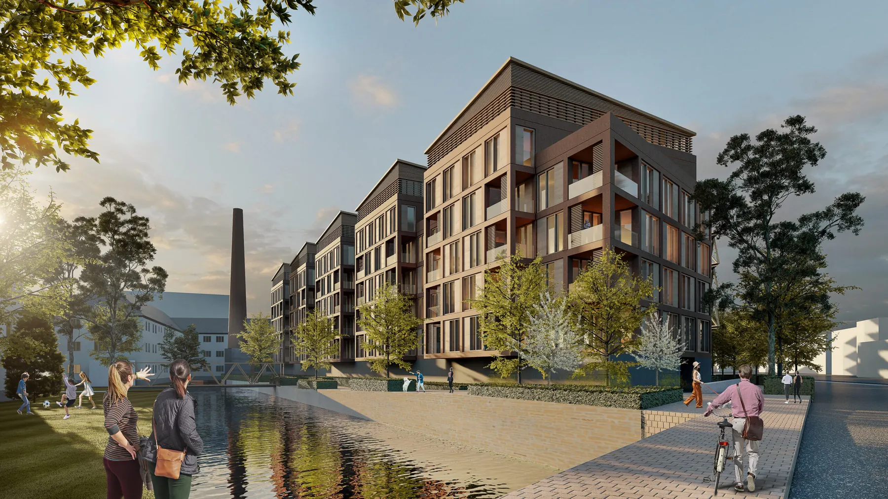
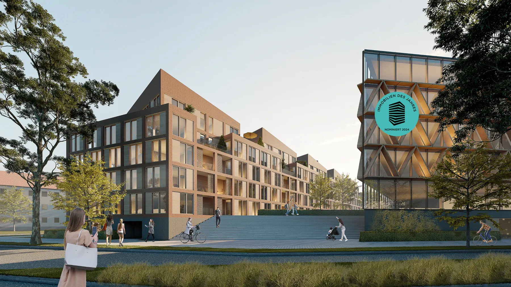
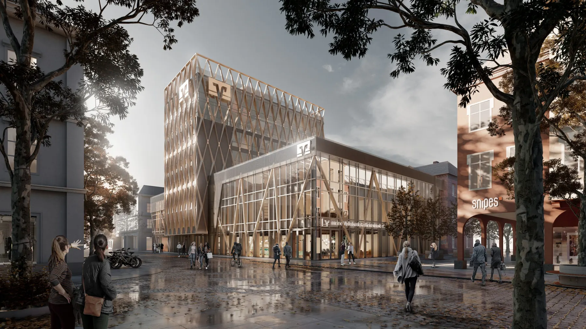
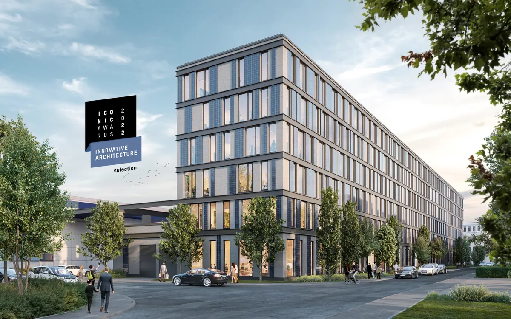
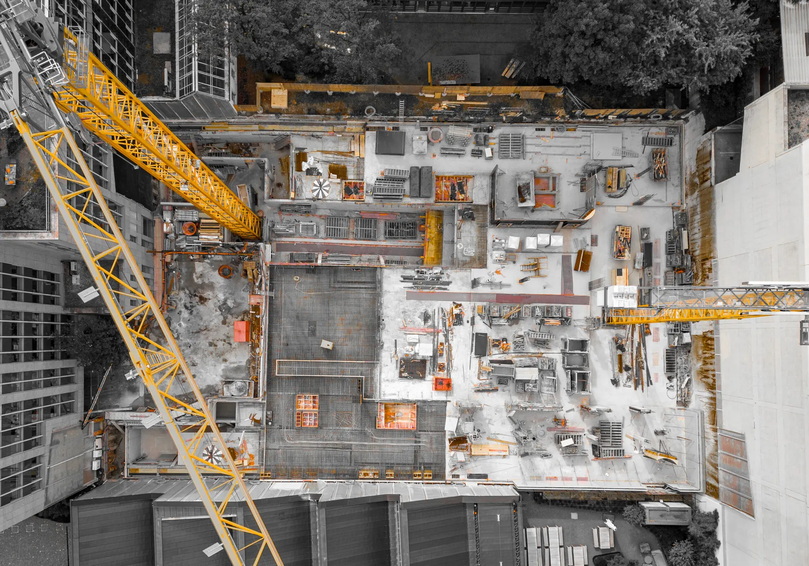

Wir entwickeln und nutzen in unserem Architektur Büro die neuesten digitalen und agilen Methoden, um …
Generalplanung + KI: Effizient. Präzise. Zukunftssicher.
Der Ansatz
Sie liefern die Basisdaten – wir entwickeln die Lösung.
Erkennen Sie Risiken und Chancen schon vor Planungsbeginn – für mehr Effizienz, weniger Kosten und erstklassiges Design.
Generalplanung bedeutet für uns mehr als Dienstleistung – sie steht für Effizienz, Qualität und Sicherheit im gesamten Bauprozess. Mit einem einzigen Vertrags- und Ansprechpartner reduzieren wir Verwaltungsaufwand und Haftungsrisiken, koordinieren ein qualifiziertes Planungsteam aus unserem Netzwerk und übernehmen die zentralen Bauherrenaufgaben in den Bereichen Qualität, Kosten, Termine und Verträge. Kunden profitieren von allen Leistungen aus einer Hand:
nahtlose Prozesse, klare Strukturen und bis zu 20 % Kosteneinsparung durch optimierte Bauabläufe. Mit über 50 Jahren Erfahrung und einem eingespielten Team aus Architekt:innen und Fachplaner:innen verbinden wir Design Excellence mit modernster Technologie wie BIM, 3D-Planung und PropertyMax-KI. Schlanke Prozesse, Lean-Management und präzise Planung sorgen für Kostensicherheit und Termintreue, während ESG-orientiertes, ressourcenschonendes Bauen Nachhaltigkeit garantiert. Ob Sanierung, Bauen im Bestand oder Neubau – Brückner Architekten realisieren maßgeschneiderte Architektur, die wirkt.
Qualitätssicherung und Expertise
KI-Potenzialanalyse
Kostenfreie KI-Potenzialanalyse als Startpunkt Ihrer Generalplanung
Mit unserer kostenlosen, KI-gestützten PropertyMax‑Potenzialanalyse erhalten Sie zu Projektbeginn einen klaren, fundierten Überblick über mögliche Bebauungsvarianten. Unsere Experten analysieren schnell und präzise baurechtliche Rahmenbedingungen, Grundstückstopografie und Erschließung—damit vermeiden Sie Überraschungen und können unmittelbar zielgerichtet weiterplanen. Die KI generiert innerhalb kürzester Zeit mehrere tausend baurechtskonforme Varianten, aus denen wir Ihnen ein Set besonders relevanter und wertoptimierter Lösungen präsentieren. Das steigert nicht nur die Planungseffizienz, sondern liefert echte Mehrwerte wie erhöhte Bruttogrundfläche, reduzierte Planungszeiten und erhöhte Investitionssicherheit. Kombinieren Sie diesen technologiegestützten Vorsprung mit unserer Full-Service‑Generalplanung – für effektive, sichere und hochwertige Architekturprojekte.
Jetzt kostenlose Potenzialanalyse starten!
Warum Brückner
Warum ist Brückner Architekten der ideale Generalplaner für Ihr Bauprojekt?
Brückner Architekten sind Generalplaner mit langjähriger Expertise in allen Leistungsphasen. Wir bieten Sicherheit, Entlastung und ein reibungsloses Projektmanagement – von der Grundlagenermittlung bis zur Realisierung. Durch ein starkes Netzwerk koordinieren wir Fachplaner nahtlos und setzen auf moderne Methoden. Mit klaren Prozessen und kontinuierlichem Monitoring sichern wir Kosten, Termine und Qualität – für den Erfolg unserer Projekte und Auftraggeber.
Brückner Architekten: Ihr Kompass für umfassende Generalplanung

Das Kathrein Werksviertel, Rosenheim
Das Kathrein Werksviertel in Rosenheim wurde für die ‚Immobilie des Jahres 2024‘ nominiert! Unsere besondere Ausrichtung auf Energieeffizienz und Autarkie hat die Anerkennung einer hoch angesehenen Jury gefunden. Wir freuen uns sehr, dass Brückner Architekten GmbH in der Süddeutschen Zeitung eine herausragende Präsenz erhalten hat! Unser neuestes Vorzeigeobjekt, das Kathrein Werksviertel in Rosenheim, nimmt Fahrt auf! Als Generalplaner sind wir voll dabei und setzen unser ganzes Know-how ein.
Ihre Vision, unser Plan - Generalplanung mit Weitblick!

Meine Volksbank Raiffeisenbank, Rosenheim
Generalplaner Leistungsbild:
Unser fachliches Know-how, dass alle Bereiche der Immobilienentwicklung und einschließt, bieten wir als Generalplaner in ganz Bayern an:
Generalplaner Architektur:
Generalplanung Architekturleistungen LP 1-9 Grundstücksanalyse Machtbarkeitsstudien Überprüfung einer Erweiterung des Baurechts Interne Architektenwettbewerbe Ausschreibung und Vergabe Bauleitung & Projektsteuerung
Ihre Generalplanung in besten Händen

Wir sind Architekten, Generalplaner und Projektentwickler. Bereits ab dem Vorentwurf integrieren wir BIM und 3D-Qualität für größerer Planungssicherheit. Brückner Architekten als Generalplaner bedeutet: Der Kunde erhält alle Leistungen aus einer Hand!
Wir sind Architekten, Generalplaner und Projektentwickler. Bereits ab dem Vorentwurf integrieren wir BIM und 3D-Qualität für größerer Planungssicherheit. Brückner Architekten als Generalplaner bedeutet: Der Kunde erhält alle Leistungen aus einer Hand! Wir sind Architekten, Generalplaner und Projektentwickler. Bereits ab dem Vorentwurf integrieren wir
Flächeneffizienz: Die herausragende Flächeneffizienz von 89,7 % bei unserem Projekt wurde durch die Kombination von KI und der Expertise unseres Teams erreicht. Mit präziser Planung und kreativer Umsetzung haben wir das maximale Potenzial des Grundstücks ausgeschöpft – stets mit einem Fokus auf Qualität und Nachhaltigkeit. Ressourcen schonen: Kosten und Zeit reduziert durch Lean-Management.
Nachhaltigkeit: Nachhaltigkeit bedeutet, mit Bedacht auf Ressourcen zu bauen und gleichzeitig Effizienz zu maximieren. Durch die optimierte Flächennutzung, das kluge Ressourcenmanagement und die integrierte Planung schaffen wir nicht nur zukunftssichere Gebäude, sondern tragen auch aktiv zum Schutz von Umwelt und Ressourcen bei. Unsere Architektur sorgt für energieeffiziente Lösungen und verringert den ökologischen Fußabdruck, ohne Kompromisse bei Qualität und Funktionalität einzugehen.
bRüCKNER ARCHITEKTEN IHR GENERALPLANER FÜR DIE REALISIERUNG
Setzen Sie auf Brückner Architekten für ein Maximum an Effizienz und Qualität.
Referenzen
Unsere Generalplanungsprojekte, unsere Referenzen

Bei den verwendeten Rohstoffen setzen wir auf ein nachhaltiges Konzept, das mit einem ICONIC Award für Innovative Architektur 2022 ausgezeichnet wurde: Die Fassadenkonstruktion besteht aus einer Leichtbaufassade in Holzrahmenbauweise, die im Fall einer Sanierung oder eines späteren Abbruchs einfach demontiert und recycelt werden kann.
Bei den verwendeten Rohstoffen setzen wir auf ein nachhaltiges Konzept, das mit einem ausgezeichnet wurde: Die Fassadenkonstruktion besteht aus einer r

Wir haben IhrInteresse geweckt?
Sie haben Fragen oder wollen einen Termin vereinbaren?